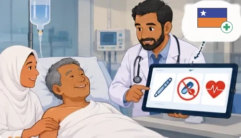

Kamal, 61, falls ill in Mina on his first Hajj, and a Saudi doctor reads his medicines and allergies from his Malaysian health summary, checked as genuine through WHO GDHCN.
One pilgrim and the people around him, eight moments, one Hajj season. Follow the people first; the technology is what makes each hand-off possible.
Eight moments that matter
 1Malaysia
Before the season — keys and codes are shared
Malaysia's HIE publishes the public keys it signs health documents with to the WHO GDHCN trust network, and shares the national code systems its IPS uses with the WHO Terminology Service. Nothing about Kamal yet: this is what lets a Saudi clinic trust and read a Malaysian record months later. Step A of the overview of key process flows.
1Malaysia
Before the season — keys and codes are shared
Malaysia's HIE publishes the public keys it signs health documents with to the WHO GDHCN trust network, and shares the national code systems its IPS uses with the WHO Terminology Service. Nothing about Kamal yet: this is what lets a Saudi clinic trust and read a Malaysian record months later. Step A of the overview of key process flows.
 2Malaysia
The health check and the choice to share
Three months before Hajj, Kamal has the mandatory pre-Hajj health examination with Dr Aisyah. He is fit to travel. She explains what the Hajj Health Record is, who can see it, and for how long. Kamal agrees on his wallet to share his patient summary with Saudi health workers during Hajj, and sets how the link to it is protected. Step 1 of the overview of key process flows.
2Malaysia
The health check and the choice to share
Three months before Hajj, Kamal has the mandatory pre-Hajj health examination with Dr Aisyah. He is fit to travel. She explains what the Hajj Health Record is, who can see it, and for how long. Kamal agrees on his wallet to share his patient summary with Saudi health workers during Hajj, and sets how the link to it is protected. Step 1 of the overview of key process flows.
 3Malaysia
His summary is assembled and signed
Malaysia's HIE assembles Kamal's International Patient Summary from his care history: his conditions, his medicines, his allergy. It issues a Verifiable Health Link to it, signs it with a key registered with GDHCN, and puts the QR code in his wallet. Step 2 of the overview of key process flows.
3Malaysia
His summary is assembled and signed
Malaysia's HIE assembles Kamal's International Patient Summary from his care history: his conditions, his medicines, his allergy. It issues a Verifiable Health Link to it, signs it with a key registered with GDHCN, and puts the QR code in his wallet. Step 2 of the overview of key process flows.
 4Kingdom of Saudi Arabia
Taken ill in Mina
On the second day in Mina, in the heat, Kamal feels dizzy and weak. Salmah brings him to the Hajj health facility. At registration he opens his wallet and shows Nurse Reem the QR code. Step 3 of the overview of key process flows.
4Kingdom of Saudi Arabia
Taken ill in Mina
On the second day in Mina, in the heat, Kamal feels dizzy and weak. Salmah brings him to the Hajj health facility. At registration he opens his wallet and shows Nurse Reem the QR code. Step 3 of the overview of key process flows.

6Kingdom of Saudi Arabia His record is read and he is treated The EMR follows the link to Malaysia's HIE and retrieves Kamal's summary. Dr Faisal sees the insulin and the penicillin allergy before he treats him for heat exhaustion and low blood sugar. The EMR keeps a rendered copy of the summary with the record of the visit. Step 5 of the overview of key process flows. 7Kingdom of Saudi Arabia
When he cannot show the code (break the glass)
On the day of Arafat Kamal collapses and is brought in unconscious. Salmah is not with him. Dr Hafiz of the Malaysian medical team gives his Hajj registration number, and the facility reaches his summary through it. Described in this guide's user scenarios as a Phase 2 scenario.
7Kingdom of Saudi Arabia
When he cannot show the code (break the glass)
On the day of Arafat Kamal collapses and is brought in unconscious. Salmah is not with him. Dr Hafiz of the Malaysian medical team gives his Hajj registration number, and the facility reaches his summary through it. Described in this guide's user scenarios as a Phase 2 scenario.
 8Malaysia
Back home
Kamal comes home. His GP in Kuala Terengganu does not know he was treated in Mina. After the story this guide tells.
8Malaysia
Back home
Kamal comes home. His GP in Kuala Terengganu does not know he was treated in Mina. After the story this guide tells.
The same journey is specified in the SMART Verifiable IPS for Pilgrimage guide: personas, business processes, the overview of key process flows, and its ArchiMate model.
Meet the people
Perform Hajj safely, and be treated properly if he is taken ill far from home.
Appears in 7 of 8 stepsSend her pilgrims fit to travel, with their consent understood and their record ready.
Appears in 2 of 8 stepsKeep Kamal well, and speak for him when he cannot.
Appears in 5 of 8 stepsRegister every pilgrim quickly, with a record she can trust.
Appears in 2 of 8 stepsTreat safely, knowing the pilgrim's medicines and allergies.
Appears in 2 of 8 stepsLook after his country's pilgrims, and vouch for them when they cannot speak.
Appears in 1 of 8 stepsFollow the record
The ordered states of Kamal's International Patient Summary along the pilgrim's journey, from held at home to read and used in the host country. Each state includes the ones before it. The journeys viewer draws it as the trust ladder ("Follow the record").
- 1Held at homeIn Malaysia's health information exchange; nothing is shared.P0
- 2ConsentedKamal has agreed to share his summary for Hajj.P1
- 3SignedAssembled, signed with a key GDHCN trusts, and in his wallet as a QR code.P2
- 4PresentedThe QR code is shown to a health worker abroad.P3
- 5VerifiedThe signature is checked against the GDHCN trust list.P4
- 6Read and usedA clinician abroad reads the summary and treats him; a rendered copy stays with the visit.P5